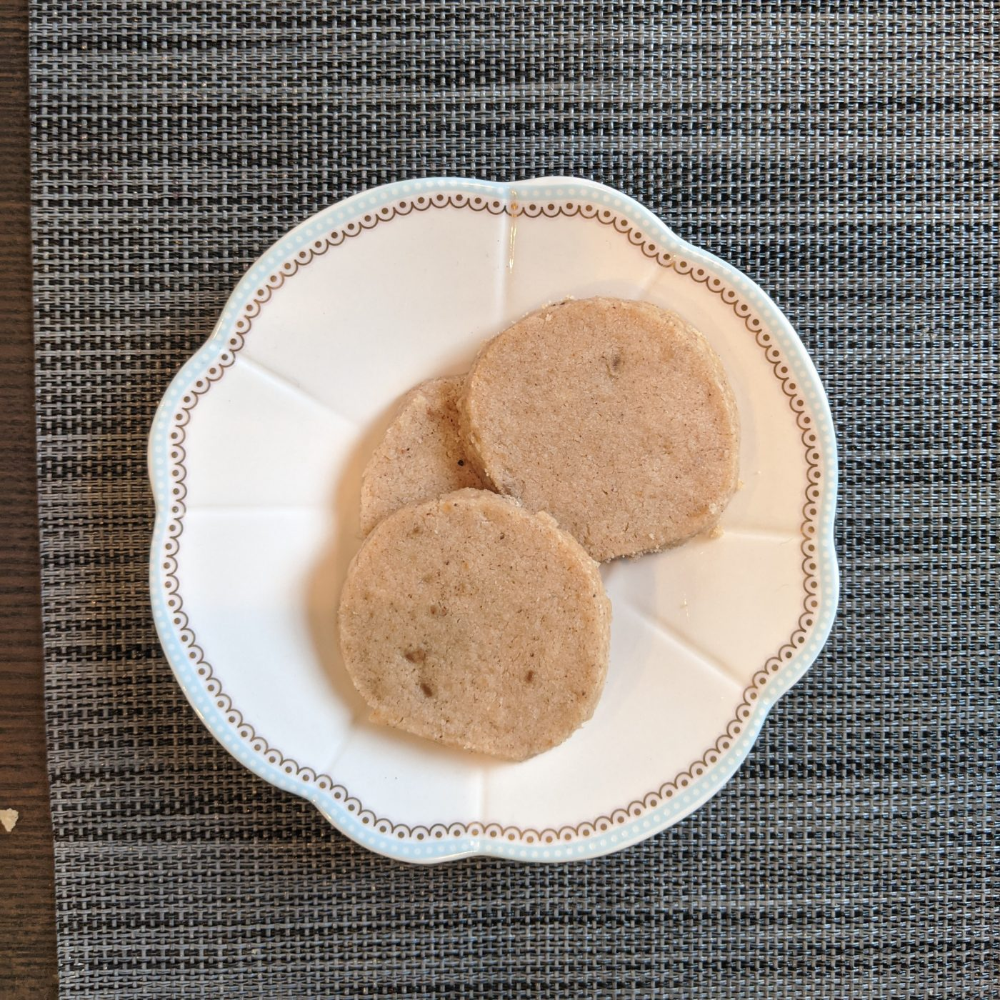

Chai Shortbread Cookies
↳ Written by Kassian

Ingredients
- 1 cup butter
At room temperature
- 100 g sugar
- 1 tsp vanilla bean paste
Or 1.5 tsp pure vanilla extract
- 285 g all-purpose flour
- 1/2 tsp salt
- 1 tsp ground cardamom
- 3/4 tsp ground cinnamon
- 1/2 tsp ground ginger
- 1/4 tsp ground nutmeg
- 1/4 tsp ground cloves
- 1/4 tsp ground black pepper
Instructions
- Preheat the oven to 350 degrees.
- Cream butter and sugar in a medium sized bowl.
- Whisk dry ingredients together in a small bowl
- Add dry ingredients slowly into the butter sugar mixture
- Either roll dough into a log and chill then slice, or roll out flat, chill, and use cookie cutter.
- Bake for about 15 mins until edges slightly brown, cool on sheet for 10 mins, then transfer to rack